KFB Racetrack Construction Kit R3 · Track Core v0.15 · QA-Regelwerk Übergänge R1 · 08.10.2026
Übergangs-Atlas v0.15
Zur Abnahme (QA R1 §1): Georg PASS / FAIL Kritiker-Punkte U1–U7: ausstehend (Steuer-Sitzung) Keine Insel-Anlage vor PASS
Zehn Prüfstücke aus dem Übergangs-Katalog, jedes für sich gebaut aus den Körpern von Track Core v0.15. Je Prüfstück drei Bildpaare aus den festen Kameras nach §4: links die J17-Vorlage bzw. ein Referenzbild, rechts das Prüfstück. Darunter die harten Regeln T1–T12 als Messwerte.
A1 A4 B1 B2 B3 B5 C1 C1H C1L C2 T6 · T12 · Tests Nicht in diesem Atlas A1 Spur dazu (Stadt 1+1 → 1+2) links: J17 chase-straight 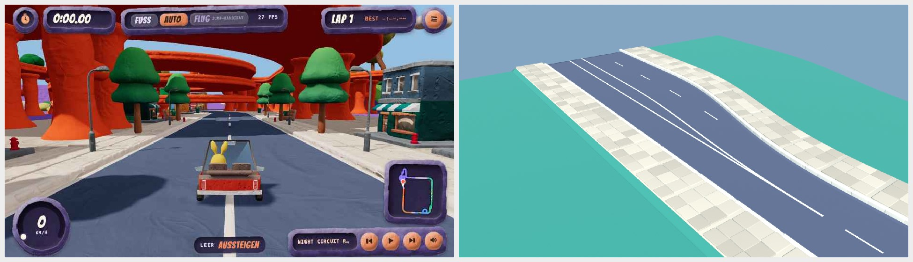
Kamera 1 · schräg von oben 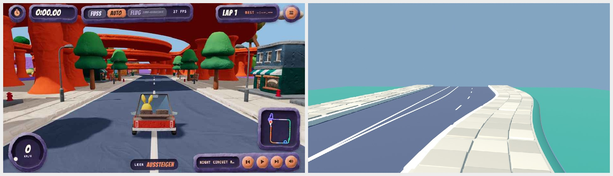
Kamera 2 · Augenhöhe 1 H vom Gehweg 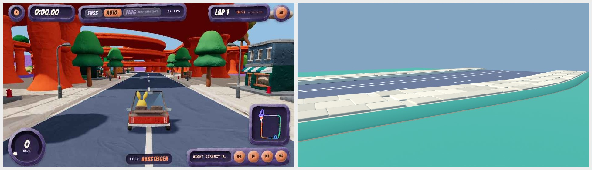
Kamera 3 · bodennah quer zur Naht / Wurzel von unten T1 Gelände über Straße 0 Treffer (max 0) T2 Naht Fuß ↔ Gelände gemeinsame Punkte, Abstand max 0 T3 Katalog-Körper kein Familien- oder Auflagewechsel (gleiche Signatur) T4 Verlauf smootherstep (C2), ein Verlauf fuer alle Stuetzpunkte · body_no_step ≤ 1,0 (test-v015) T5 Material Rollen-Abweichungen 0 · Grün auf Bordstein/Wand 0 T7 Maße Anfang Bordstein 0,35 · Gehweg 4,9 · Wand 0 · gesamt 19,2 T7 Maße Ende Bordstein 0,35 · Gehweg 4,9 · Wand 0 · gesamt 32 T8 Querneigung / Cologne max 0° · Innenseite höher: 0 · Wellen: 0 T9 Muster 264 Platten 1,6 × 1,6 · schmalste 1,25 · 89 Bordsteine 1,6
A4 Gerade ↔ Kurve (Stadt, R 30, 90°) links: J17 chase-curve 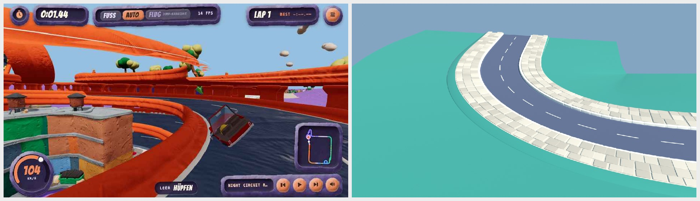
Kamera 1 · schräg von oben 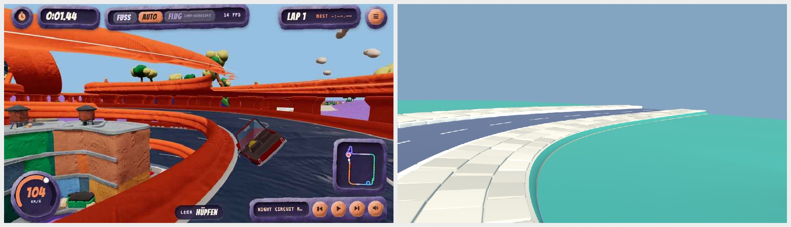
Kamera 2 · Augenhöhe 1 H vom Gehweg 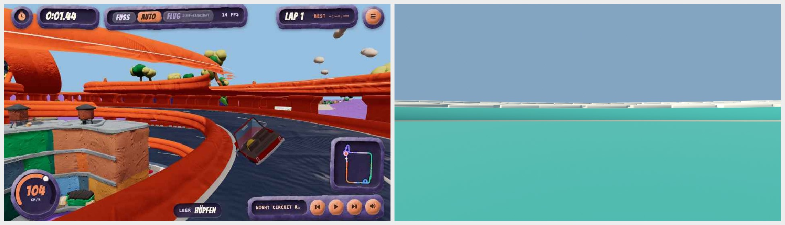
Kamera 3 · bodennah quer zur Naht / Wurzel von unten T1 Gelände über Straße 0 Treffer (max 0) T2 Naht Fuß ↔ Gelände gemeinsame Punkte, Abstand max 0 T3 Katalog-Körper kein Familien- oder Auflagewechsel (gleiche Signatur) T4 Verlauf smootherstep (C2), ein Verlauf fuer alle Stuetzpunkte · body_no_step ≤ 1,0 (test-v015) T5 Material Rollen-Abweichungen 0 · Grün auf Bordstein/Wand 0 T7 Maße Anfang Bordstein 0,35 · Gehweg 4,9 · Wand 0 · gesamt 19,2 T7 Maße Ende Bordstein 0,35 · Gehweg 4,9 · Wand 0 · gesamt 19,2 T8 Querneigung / Cologne max 4° · Innenseite höher: 0 · Wellen: 0 T9 Muster 326 Platten 1,6 × 1,6 · schmalste 1,25 · 109 Bordsteine 1,6
B1 Ortseingang Stadt → Land links: Joyride J10 Straße 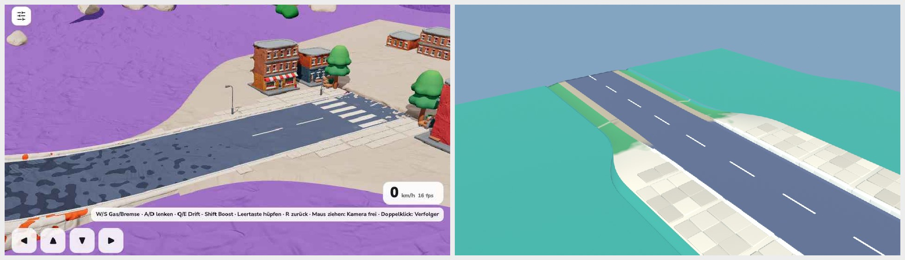
Kamera 1 · schräg von oben 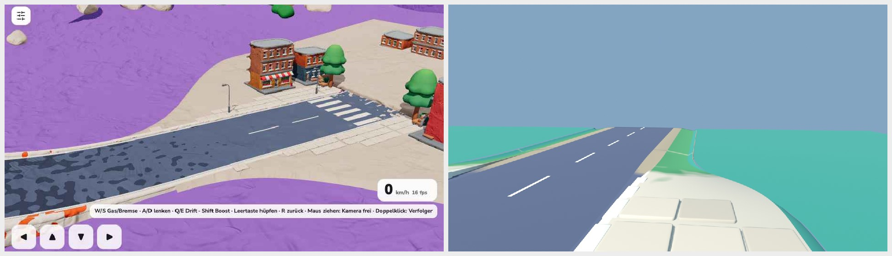
Kamera 2 · Augenhöhe 1 H vom Gehweg 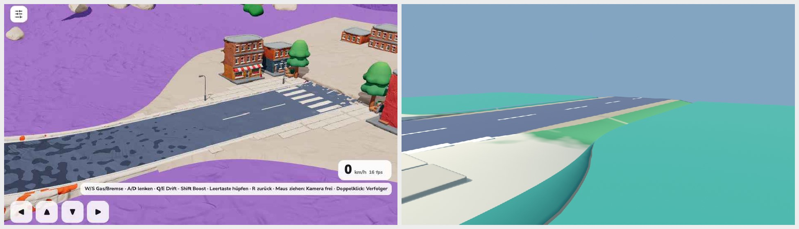
Kamera 3 · bodennah quer zur Naht / Wurzel von unten T1 Gelände über Straße 0 Treffer (max 0) T2 Naht Fuß ↔ Gelände gemeinsame Punkte, Abstand max 0 T3 Katalog-Körper B1 family 16.492..28.8 T4 Verlauf smootherstep (C2), ein Verlauf fuer alle Stuetzpunkte · body_no_step ≤ 1,0 (test-v015) T5 Material Rollen-Abweichungen 0 · Grün auf Bordstein/Wand 0 T7 Maße Anfang Bordstein 0,35 · Gehweg 4,9 · Wand 0 · gesamt 19,2 T7 Maße Ende Bordstein -0,05 · Gehweg 1,5 · Wand 0 · gesamt 12,5 T8 Querneigung / Cologne max 0° · Innenseite höher: 0 · Wellen: 0 T9 Muster 64 Platten 1,6 × 1,6 · schmalste 1,25 · 26 Bordsteine 1,6
B2 Stadt → Fahrschule links: J17 hop-out-2 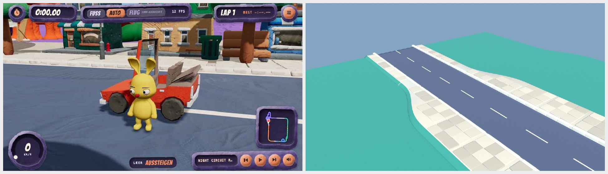
Kamera 1 · schräg von oben 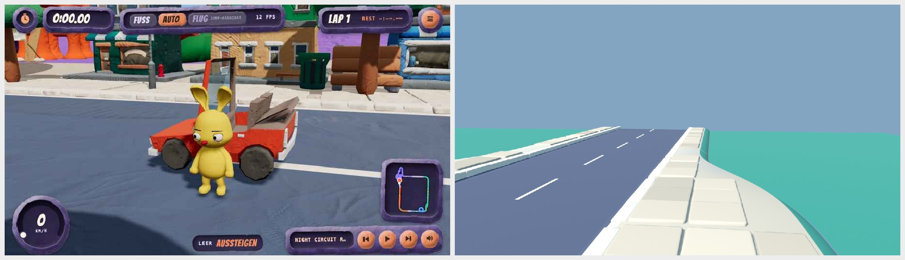
Kamera 2 · Augenhöhe 1 H vom Gehweg 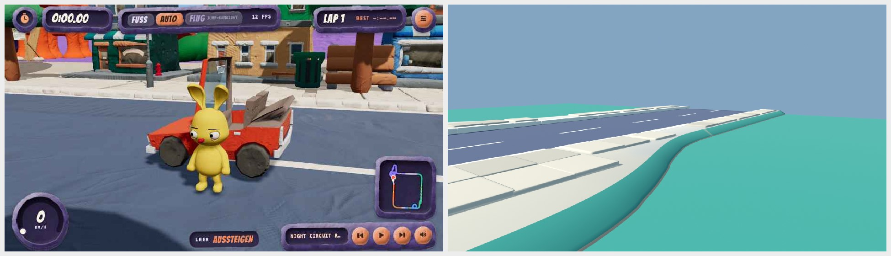
Kamera 3 · bodennah quer zur Naht / Wurzel von unten T1 Gelände über Straße 0 Treffer (max 0) T2 Naht Fuß ↔ Gelände gemeinsame Punkte, Abstand max 0 T3 Katalog-Körper B2 family 16.492..28.8 T4 Verlauf smootherstep (C2), ein Verlauf fuer alle Stuetzpunkte · body_no_step ≤ 1,0 (test-v015) T5 Material Rollen-Abweichungen 0 · Grün auf Bordstein/Wand 0 T7 Maße Anfang Bordstein 0,35 · Gehweg 4,9 · Wand 0 · gesamt 19,2 T7 Maße Ende Bordstein 0,25 · Gehweg 1,7 · Wand 0 · gesamt 12,8 T8 Querneigung / Cologne max 0° · Innenseite höher: 0 · Wellen: 0 T9 Muster 96 Platten 1,6 × 1,6 · schmalste 1,25 · 56 Bordsteine 1,6
B3 Land → Berg links: Joyride J10 Straße 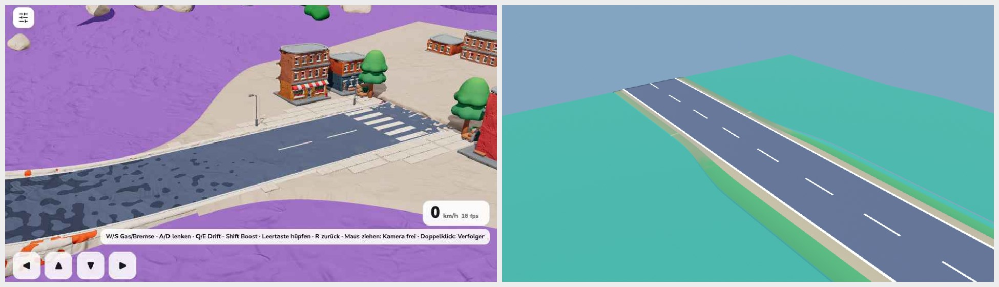
Kamera 1 · schräg von oben 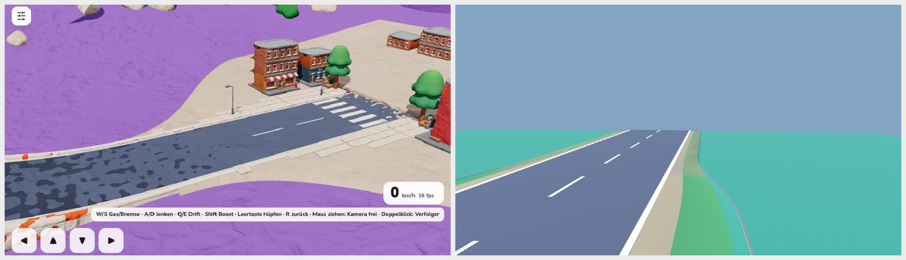
Kamera 2 · Augenhöhe 1 H vom Gehweg 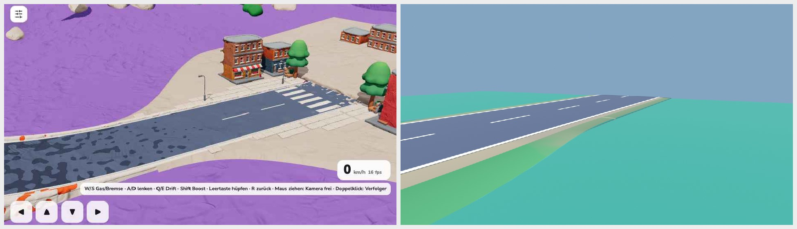
Kamera 3 · bodennah quer zur Naht / Wurzel von unten T1 Gelände über Straße 0 Treffer (max 0) T2 Naht Fuß ↔ Gelände gemeinsame Punkte, Abstand max 0 T3 Katalog-Körper B3 family 16.492..28.8 T4 Verlauf smootherstep (C2), ein Verlauf fuer alle Stuetzpunkte · body_no_step ≤ 1,0 (test-v015) T5 Material Rollen-Abweichungen 0 · Grün auf Bordstein/Wand 0 T7 Maße Anfang Bordstein -0,05 · Gehweg 1,5 · Wand 0 · gesamt 12,5 T7 Maße Ende Bordstein -0,03 · Gehweg 0,8 · Wand 0 · gesamt 10,1 T8 Querneigung / Cologne max 0° · Innenseite höher: 0 · Wellen: 0 T9 Muster 0 Platten 1,6 × 1,6 · schmalste – · 0 Bordsteine 1,6
B5 Rampenfuß Highway → Stadt (Einbahn) links: J17 chase-loop-a 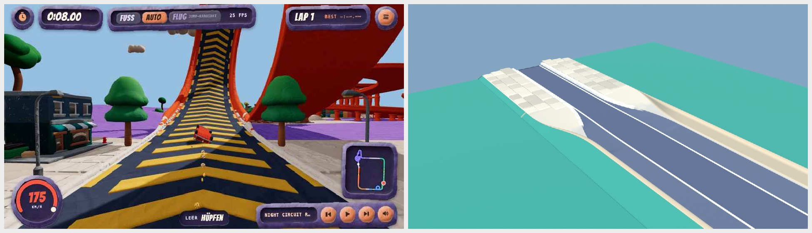
Kamera 1 · schräg von oben 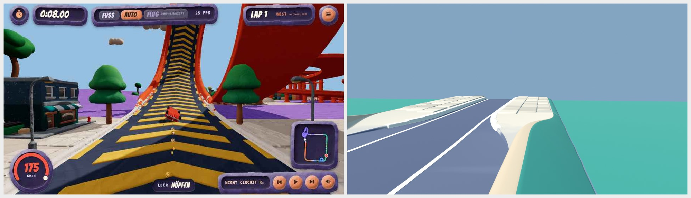
Kamera 2 · Augenhöhe 1 H vom Gehweg 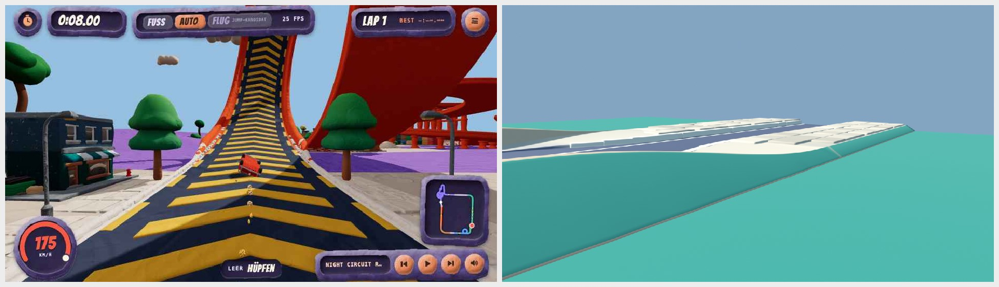
Kamera 3 · bodennah quer zur Naht / Wurzel von unten T1 Gelände über Straße 0 Treffer (max 0) T2 Naht Fuß ↔ Gelände gemeinsame Punkte, Abstand max 0 T3 Katalog-Körper B5 family 16.492..28.8 T4 Verlauf smootherstep (C2), ein Verlauf fuer alle Stuetzpunkte · body_no_step ≤ 1,0 (test-v015) T5 Material Rollen-Abweichungen 0 · Grün auf Bordstein/Wand 0 T7 Maße Anfang Bordstein 0 · Gehweg 0,3 · Wand 1,3 · gesamt 12,3 T7 Maße Ende Bordstein 0,35 · Gehweg 4,9 · Wand 0 · gesamt 15,2 T8 Querneigung / Cologne max 0° · Innenseite höher: 0 · Wellen: 0 T9 Muster 60 Platten 1,6 × 1,6 · schmalste 1,25 · 28 Bordsteine 1,6
C1 Boden → Brücke mit Kuppe → Boden (Stadt) links: Floating Islands Design 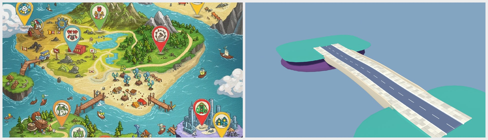
Kamera 1 · schräg von oben Kamera 2 · Augenhöhe 1 H vom Gehweg 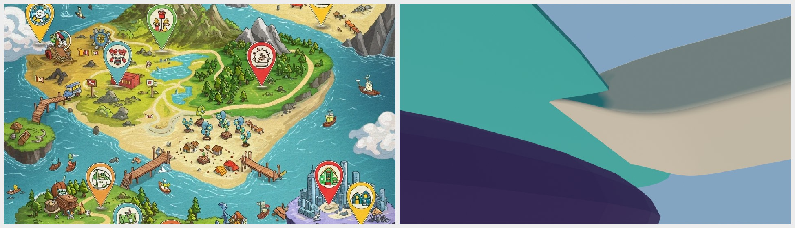
Kamera 3 · bodennah quer zur Naht / Wurzel von unten T1 Gelände über Straße 0 Treffer (max 0) T2 Naht Fuß ↔ Gelände Atlas-Testinsel: Wurzel überlappt den Fels (echte Naht: Lab, kfb.road-bed/1) T3 Katalog-Körper C1 support 14.1..26.9; C1 support 78.134..90.934 T4 Verlauf smootherstep (C2), ein Verlauf fuer alle Stuetzpunkte · body_no_step ≤ 1,0 (test-v015) T5 Material Rollen-Abweichungen 0 · Grün auf Bordstein/Wand 0 T7 Maße Anfang Bordstein 0,35 · Gehweg 4,9 · Wand 0 · gesamt 19,2 T7 Maße Ende Bordstein 0,35 · Gehweg 4,9 · Wand 0 · gesamt 19,2 T8 Querneigung / Cologne max 0° · Innenseite höher: 0 · Wellen: 0 T9 Muster 378 Platten 1,6 × 1,6 · schmalste 0,65 · 128 Bordsteine 1,6 T10 Brücke Kuppe 0,9 · Steigung max 4,86 % · Wurzel 3,2 · Mitte 2,118 · Pfeiler 0
C1H Boden → Brücke → Boden (Highway 2+2) links: Floating Islands Design 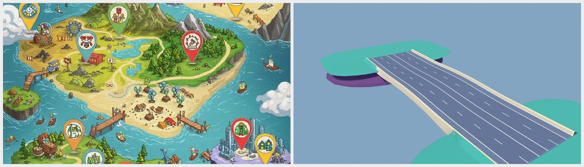
Kamera 1 · schräg von oben 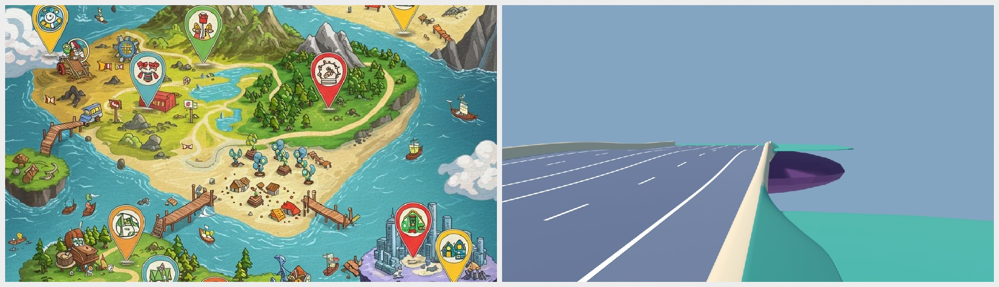
Kamera 2 · Augenhöhe 1 H vom Gehweg 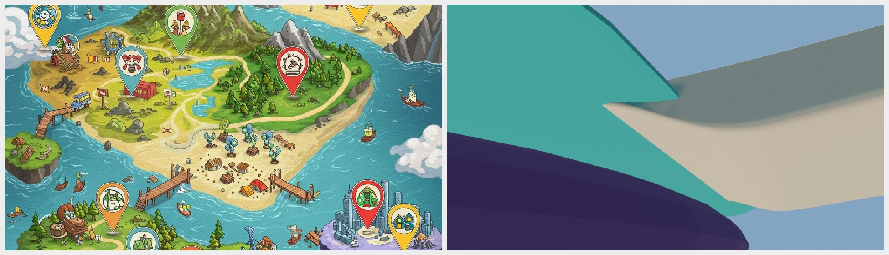
Kamera 3 · bodennah quer zur Naht / Wurzel von unten T1 Gelände über Straße 0 Treffer (max 0) T2 Naht Fuß ↔ Gelände Atlas-Testinsel: Wurzel überlappt den Fels (echte Naht: Lab, kfb.road-bed/1) T3 Katalog-Körper C1 support 14.1..26.9; C1 support 78.134..90.934 T4 Verlauf smootherstep (C2), ein Verlauf fuer alle Stuetzpunkte · body_no_step ≤ 1,0 (test-v015) T5 Material Rollen-Abweichungen 0 · Grün auf Bordstein/Wand 0 T7 Maße Anfang Bordstein 0 · Gehweg 0,3 · Wand 1,3 · gesamt 29,8 T7 Maße Ende Bordstein 0 · Gehweg 0,3 · Wand 1,3 · gesamt 29,8 T8 Querneigung / Cologne max 0° · Innenseite höher: 0 · Wellen: 0 T9 Muster 0 Platten 1,6 × 1,6 · schmalste – · 0 Bordsteine 1,6 T10 Brücke Kuppe 0,9 · Steigung max 4,86 % · Wurzel 3,2 · Mitte 2,118 · Pfeiler 0
C1L Boden → Brücke → Boden (Land) links: Floating Islands Design 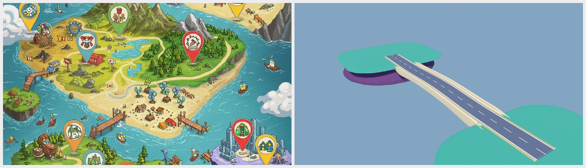
Kamera 1 · schräg von oben 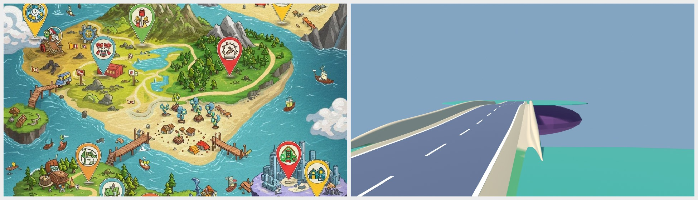
Kamera 2 · Augenhöhe 1 H vom Gehweg 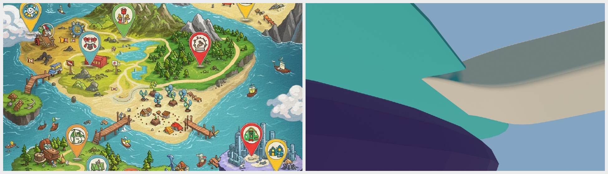
Kamera 3 · bodennah quer zur Naht / Wurzel von unten T1 Gelände über Straße 0 Treffer (max 0) T2 Naht Fuß ↔ Gelände Atlas-Testinsel: Wurzel überlappt den Fels (echte Naht: Lab, kfb.road-bed/1) T3 Katalog-Körper C1 support 14.1..26.9; C1 support 78.134..90.934 T4 Verlauf smootherstep (C2), ein Verlauf fuer alle Stuetzpunkte · body_no_step ≤ 1,0 (test-v015) T5 Material Rollen-Abweichungen 0 · Grün auf Bordstein/Wand 0 T7 Maße Anfang Bordstein -0,05 · Gehweg 1,5 · Wand 0 · gesamt 12,5 T7 Maße Ende Bordstein -0,05 · Gehweg 1,5 · Wand 0 · gesamt 12,5 T8 Querneigung / Cologne max 0° · Innenseite höher: 0 · Wellen: 0 T9 Muster 0 Platten 1,6 × 1,6 · schmalste – · 0 Bordsteine 1,6 T10 Brücke Kuppe 0,9 · Steigung max 4,86 % · Wurzel 3,2 · Mitte 2,118 · Pfeiler 0
C2 Brücke wächst aus dem Inselrand (Stadt, Wurzel 4,8) links: Floating Islands Design Kamera 1 · schräg von oben 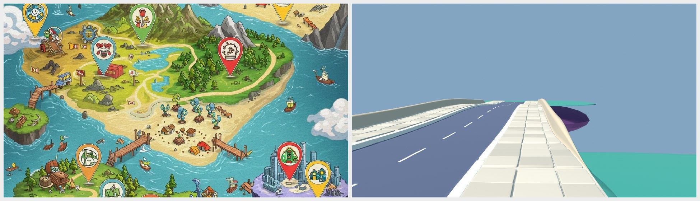
Kamera 2 · Augenhöhe 1 H vom Gehweg 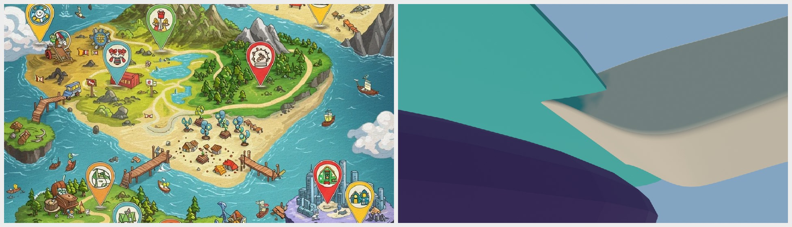
Kamera 3 · bodennah quer zur Naht / Wurzel von unten T1 Gelände über Straße 0 Treffer (max 0) T2 Naht Fuß ↔ Gelände Atlas-Testinsel: Wurzel überlappt den Fels (echte Naht: Lab, kfb.road-bed/1) T3 Katalog-Körper C2 support 14.1..26.9; C2 support 78.134..90.934 T4 Verlauf smootherstep (C2), ein Verlauf fuer alle Stuetzpunkte · body_no_step ≤ 1,0 (test-v015) T5 Material Rollen-Abweichungen 0 · Grün auf Bordstein/Wand 0 T7 Maße Anfang Bordstein 0,35 · Gehweg 4,9 · Wand 0 · gesamt 19,2 T7 Maße Ende Bordstein 0,35 · Gehweg 4,9 · Wand 0 · gesamt 19,2 T8 Querneigung / Cologne max 0° · Innenseite höher: 0 · Wellen: 0 T9 Muster 378 Platten 1,6 × 1,6 · schmalste 0,65 · 128 Bordsteine 1,6 T10 Brücke Kuppe 0,9 · Steigung max 4,86 % · Wurzel 4,8 · Mitte 2,118 · Pfeiler 0
alle T6, T12 und Testsuiten
T6 Highway ↔ Stadt Bau-Fehler (Katalog B4) bei direktem Wechsel auf der Strecke; geprüft in test-v015. Die frühere Anlage A1b wird damit abgelehnt. T3 abgelehnte Fälle Stadt → Berg (kein Eintrag) · Ortseingang 6 statt 12,8 · Welt → Rennen ohne Track-Tor (B6) · Kuppe steiler als 5 %: alle als Bau-Fehler gemeldet T12 Regression S13-Bericht (v0.12, 329 Prüfungen) byte-gleich; v0.13-Suite 60/60; v0.14-Suite 15/15 test-v015 94/94 (Körper, Katalog, Kuppe, Wurzel, Brüstung, Böschung 1:1,5, Ablehnungen) T1 / T2 echte Insel Lab-Messung am Beispiel rkit_hub.roadbed.json (Steuer-Sitzung, 17 027 Gelände-Dreiecke): T1 0 Dreiecke über Fahrbahn/Bordstein/Gehweg, an 88 Kurven-Stationen 0; T2 alle 244 Nahtpunkte und 242 Nahtsegmente im Netz, Höhenfehler 0
offen Nicht in diesem Atlas / bekannte Stellen
Nicht als Prüfstück gebaut: A2 Mittelstreifen, A3 Gehwegbreite, D2–D6 (Einmündung, Platz, Zufahrt, Gebäude, Furt), E1–E4 (Kreuzung, Furt, Aus-/Einfahrt im Bänder-Modell, Kreisverkehr), F2 Sackgasse, B6 und C4 (P2).
Look: Farben und Formen sind auf J17 ausgerichtet, die Knet-Oberfläche (Relief) ist in diesen Bildern kaum sichtbar; Feinschliff bei Claude Design.
C1/C2: Die Atlas-Testinsel ist ein Block aus Fels und Grasdeckel; die Brückenwurzel überlappt ihn. Die echte gemeinsame Kontur entsteht im Lab über rim + Wurzel-GLB.
Lab-Rückmeldung zum Beispiel-Straßenbett: Einmündung D2 überbrückt die Böschung noch nicht (≈ 1,1 offen), Wurzel-GLB für C2 fehlt, Böschungsstreifen an den Brückenenden ragen über den Rand.
Slots (14 Punkte) bleiben als Fahr- und Prüfhülle; der Körper ist zusätzlich. Ihr Abgleich in Übergängen ist nicht gemessen.
Quellen: trackcore/track-core.mjs v0.15 · atlas/atlas_v015.mjs · test-v015.mjs · blender/rkit_r3_atlas_v015.py · evidence/atlas_v015/atlas_measure.json